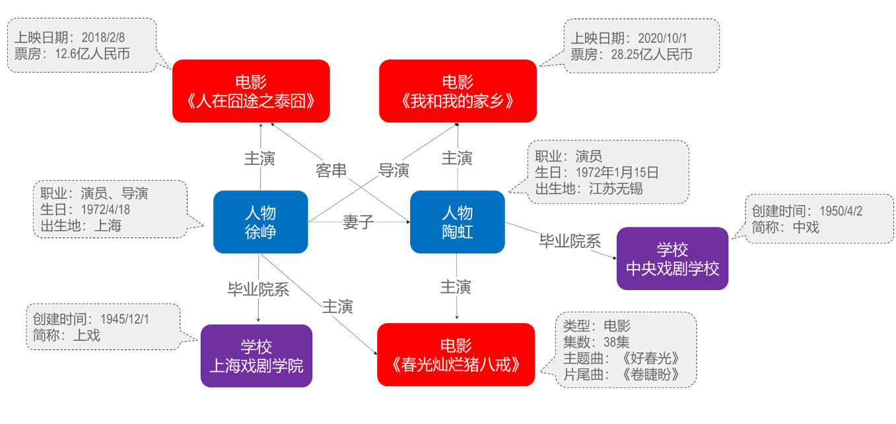
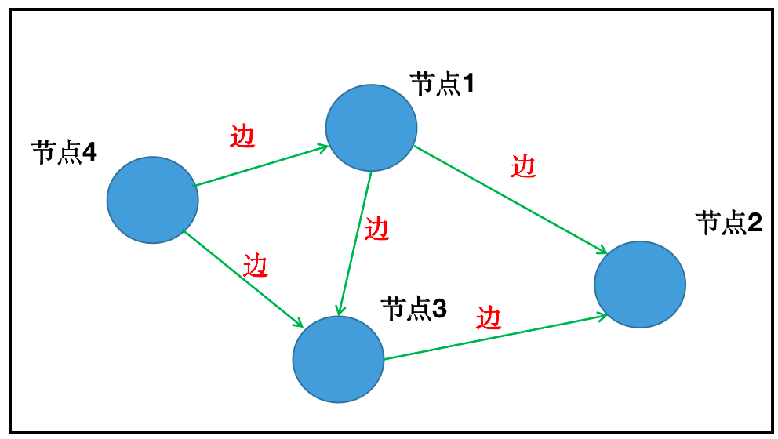
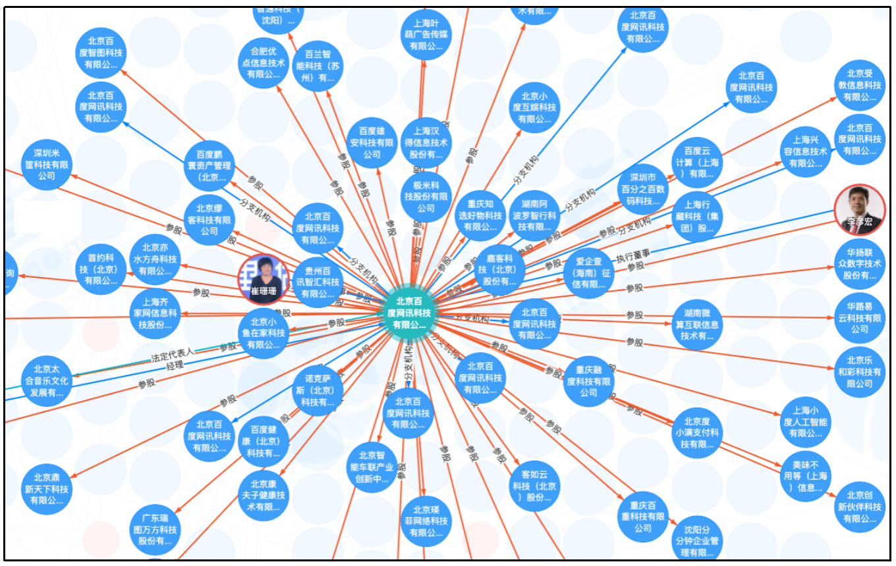
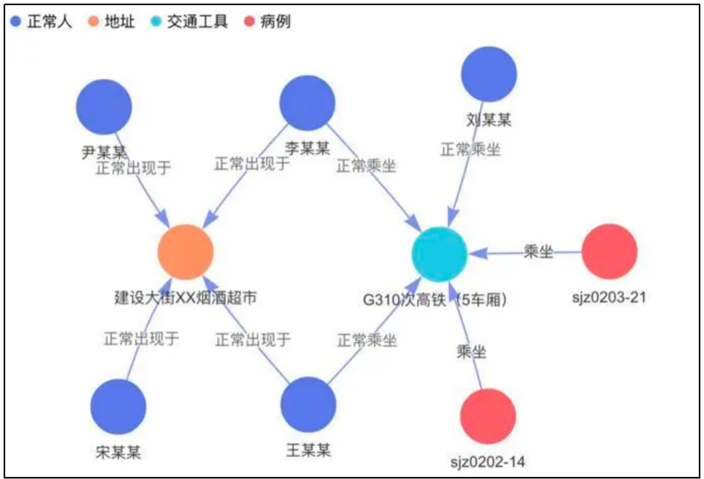
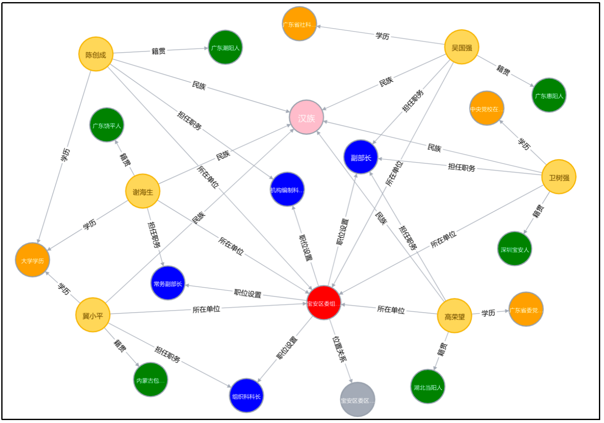

关系抽取项目背景介绍¶
学习目标¶
- 理解娱乐数据关系抽取项目的开发背景.
- 了解关系抽取技术在企业中其他实际应用场景
娱乐数据关系抽取项目背景¶
- 关系抽取是一种技术，旨在从文本数据中自动识别和提取出不同实体之间的关系. 在娱乐业中，这种技术通常被用于社交媒体分析.
- 在社交媒体分析中，社交媒体平台上的用户经常会谈论不同的娱乐明星、电影、音乐和电视节目，通过使用关系抽取技术，可以帮助用户了解不同实体之间的关系，例如明星之间的合作、电影之间的相似性等等. 这些信息可以被用于市场调研、竞品分析、广告投放等多个方面. 同时，关系抽取技术还可以帮助用户快速地了解社交媒体上的热点话题和事件，并进行更加精准的舆情分析和预测.

- 在正式介绍娱乐数据关系抽取之前，我们需要了解一下知识图谱 (Knowledge Graph) 的概念，因为关系抽取本质属于搭建知识图谱的关键技术之一，而知识图谱也是实体关系的一种展现形式. 因此，需要对知识图谱相关知识有一定的了解和认知.
- 其实，知识图谱这一概念最早由谷歌提出，初衷是为了让机器具备推理的能力，让它去“理解”语义层面，提供更好的查询. 近年来, 随着知识图谱技术的发展，已被广泛应用于智能搜索、智能问答、个性化推荐、人力资源管理等领域.
- 什么是知识图谱呢？
- 在这里我们分开讨论一下什么是知识，什么是图谱.
- 什么是知识？
- 知识是人类在实践中认识客观世界的成果，它包括事实、信息、描述以及在教育和实践中获得的技能. 知识是人类从各个途径中获得的经过提升、总结与凝炼的系统的认识.
- 举一个简单的例子: 226.1厘米，229厘米，都是客观存在的单独数据. 此时，数据不具有任何意义，仅表达一个客观表达事实. 而如果我们说"姚明的臂展为226.1厘米"、"姚明的身高是229厘米"则称为是事实型的陈述，属于信息的范畴. 那么所谓知识，就是对信息层面的抽象和归纳，如果我们把姚明的身高、臂展，及其他属性整合起来, 就得到了对于姚明的一个认知, 进一步可以了解到姚明的身高比普通人要高.
-
什么是图谱
- 图谱的英文是Graph，直译过来就是“图”的意思. 在图论（数学的一个研究分支）中，图表示一些事物与另一些事物之间相互连接的结构.
- 图通常由节点（Vertex）和边（Edge）来构成，多关系图一般包含多种类型的节点和多种类型的边. 实体（节点）指的是现实世界中的事物比如人、地名、公司等，关系（边）则用来表达不同实体之间的某种联系，比如张三-“出生于”-上海、小明和小红是“朋友”等等. 下面是个非常简单的图，它由4个节点和5条边组成.

- 从字面上看，知识图谱就是用图的形式将知识表示出来. 图中的结点代表语义实体或概念，边代表结点间的各种语义关系.
- 如果我们将上述姚明的一些基本信息用计算机所能理解的语言表示出来，那么我们可以构建一个简单的知识图谱来实现. 比如，<姚明，职业，篮球运动员>表示姚明的职业是篮球运动员，其中“姚明”和“篮球运动员”是两个节点 (即实体)，而节点间边(即关系)是“职业”. 这是一种常用的基于符号的知识表示方式——资源描述框架（Resource Description Framework，RDF），它把知识表示为一个包含主语（Subject）、谓语（Predicate）和宾语（Object）的三元组
- 从上述内容描述我们可以总结出，构建知识图谱的关键技术环节之一（或者说不可或缺的环节之一）就是实现关系抽取. 因此，如何从文本中实现关系抽取也成为众多学者或企业研究的热点问题.
关系抽取业务其他应用场景¶
- 关系抽取技术已发展多年，相关产业也日趋成熟，下面是几种主要的信息抽取产业应用：
- 商业信息抽取：通过开发专门的关系抽取系统，分析各渠道收集的商业信息大数据，抽取诸如有关公司工商信息、舆情现状、风险监控等信息，提供决策支持信息.
- 下图为：**公司利用全量工商股权数据，结合《大额风险暴露管理办法》关联客户识别方法进行建模，抽取企业间的股权投资关系，分析企业集团派系.

- 医疗信息抽取：医疗保健机构以及健康保险部门可以利用关系抽取技术，获取病人的症状、诊断情况、化验结果以及治疗情况，以便更好地提供医疗服务和保险服务.
- 下图是**公司根据互联网公开的新冠感染人员出现的时间、场所、乘坐交通工具等信息，形成的新冠流行病学图谱. 基本应用：可以助力对流行病调查、溯源、密切接触者追踪，为医护人员和疾病防控人员提供技术支持，加速流行病调查研究.

- 政务信息抽取：政务部门利用信息抽取系统，获取众多的政务文件中的有效信息，使政务服务更加的准确、高效.
- 下图是***公司和政府合作，结合政府机关提供的日常工作和生产过程中产生的各种数据（去敏），构建了政务知识图谱，一方面实现海量政务数据自动化分析监测的手段，另一方面可以提高政务人员工作的效率.

小结总结¶
- 本小节主要介绍关系抽取的项目背景，是属于知识图谱构建的关键技术之一，也是目前很多企业应用的信息抽取手段之一.
- 对关系抽取实际业务应用场景进行了简单介绍，涉及行业各方面，因此也是我们需要掌握的NLP基本技术之一.